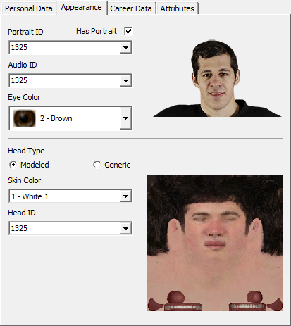

On this page, the player's physical appearance information can be previewed and modified:

Player Appearance
The default distribution of NHLView does not come with any graphical assets, so previews will not be available. However, you can download complimentary graphical assets for each supported version of the game on NHLView website.
Portrait ID/Has Portrait - Player photos are assigned an identifier in the game. It is possible that the identifier is assigned but the physical file with this photo does not exist. In such situations, the flag Has Portrait is unchecked and the game ignores the identifier value. The drop-down list shows all the default photo IDs (generated from the default roster), sorted alphabetically by player's name. In addition, if assets are available, the list will show all the photo IDs for which the image is available even if no player in the default roster had this photo.
Audio ID - Identifier for the player's play-by-play name. The drop-down lost shows all the default audio IDs (generated from the default roster), as well as custom last names offered by in-game Create A Player mode.
Head ID - Identifier for the game face of the player. Values below 10000 represent actual 3D modeled faces, 10000+ represent generic heads, 20000+ represent custom heads. Future versions of NHLView will have the drop-down filled with user-friendly descriptions. Until then you have to change the value somewhat randomly and test how the player looks in the game.
Head Type - Select how to customize the player's 3D head. Three types are available: Modeled, Generic and Custom.
oCustom is only available for placeholder players used by in-game Create A Player mode. In this mode, all elements of player's face are customizable, although NHLView currently only supports Skin Tone and Head Shape. Additional attributes, such as hair color, eyebrows, etc will be available in future versions.
oGeneric head is the most common type. Each version of the game comes with 100-200 generic faces and most of the players use one of these faces. Such head ID automatically assigns the skin color so the option to select the skin color is not available for generic heads.
oModeled heads only usually exist for a few select players. The drop-down list shows all the default head IDs (generated from the default roster).
Skin Color/Tone - Skin color determines how hands and other exposed body parts are rendered. Skin Tone only affects players with a Custom head type. Even though the preview of the head will show a single skin tone for a custom Head ID, any tone can be assigned and will work properly for any custom head. The textual descriptions for skin tones are not currently available.